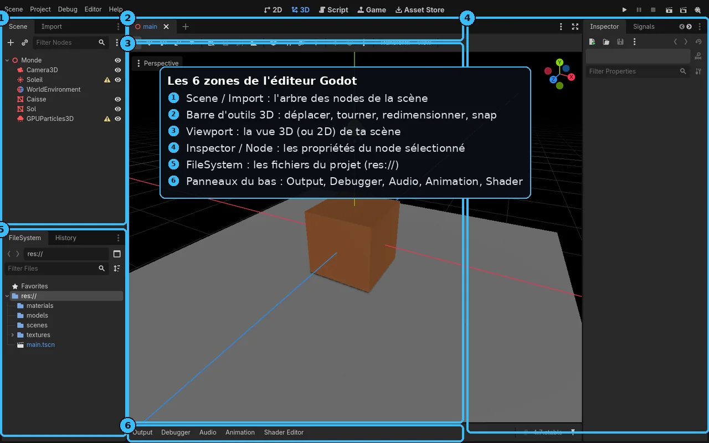
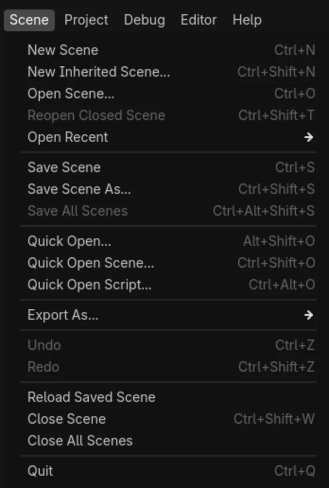
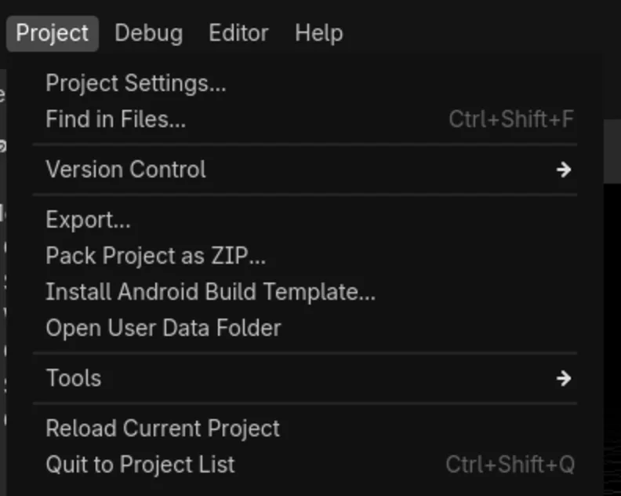
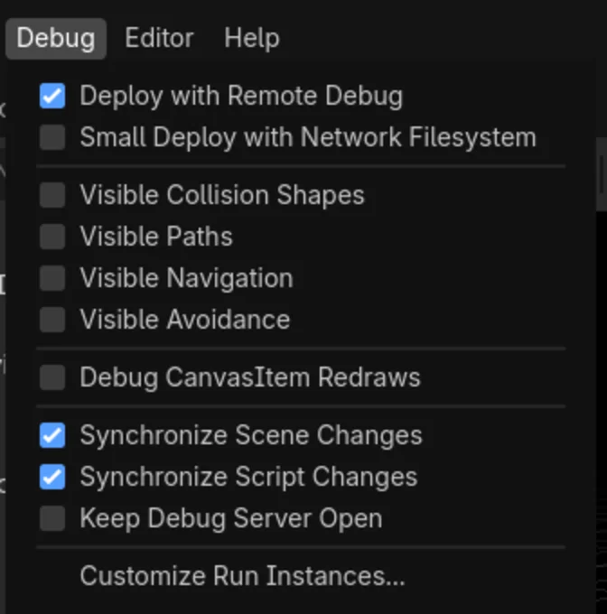
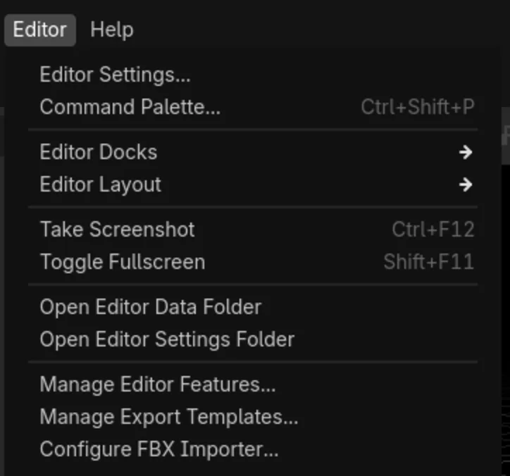
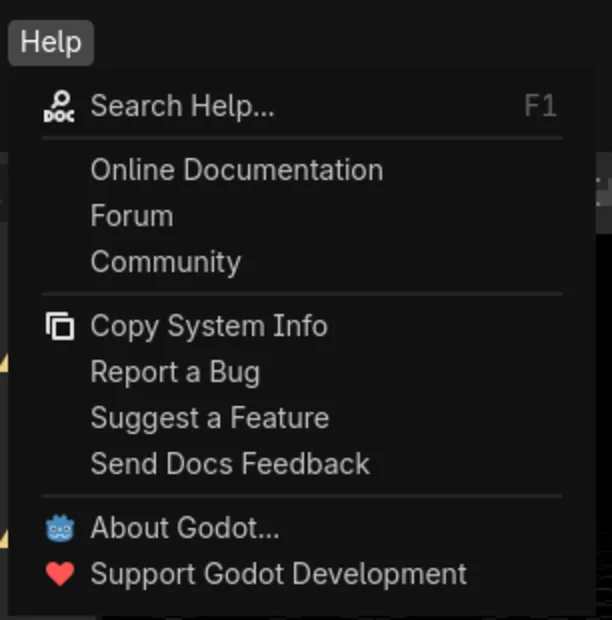
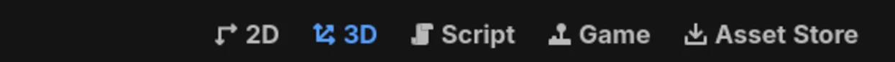
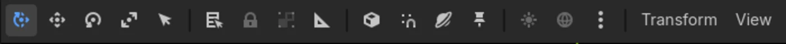
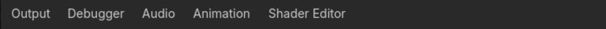

G2+ — Guide complet de l'interface Godot
Un tour complet et illustré de l'éditeur Godot 4.x, en vraies captures : chaque menu ouvert, chaque onglet, la barre d'outils 3D, les docks et les panneaux du bas — avec, pour chaque zone, un tableau qui explique chaque entrée. L'idée : après cette page, plus besoin d'aller chercher ailleurs « à quoi sert ce bouton ».
C'est une leçon de référence : parcours-la une fois pour te repérer, puis reviens-y quand tu croises un bouton inconnu. Toutes les captures sont cliquables pour s'agrandir. Les raccourcis sont notés en gris (comme ceci). Interface montrée : Godot 4.7 stable.
Vue d'ensemble : les 6 zones
Avant les détails, la carte générale. L'éditeur se découpe toujours en six zones, quel que soit ce que tu fais.

1. La barre de menus
Cinq menus tout en haut à gauche : Scene, Project, Debug, Editor, Help. On les passe en revue un par un.
Menu Scene — fichiers de scène

.tscn : créer, ouvrir, sauvegarder, exporter, fermer.| Item | À quoi ça sert |
|---|---|
| New Scene (Ctrl N) | Créer une nouvelle scène vide (on choisit ensuite son node racine). |
| New Inherited Scene… (Ctrl Shift N) | Créer une scène qui hérite d'une autre (part d'une base et la spécialise). |
| Open Scene… (Ctrl O) | Ouvrir un fichier de scène .tscn existant. |
| Reopen Closed Scene (Ctrl Shift T) | Rouvrir la dernière scène fermée (pratique après une fermeture par erreur). |
| Open Recent ▸ | Liste des scènes récemment ouvertes. |
| Save Scene (Ctrl S) | Enregistrer la scène courante. |
| Save Scene As… (Ctrl Shift S) | Enregistrer sous un nouveau nom/emplacement. |
| Save All Scenes (Ctrl Alt Shift S) | Enregistrer toutes les scènes ouvertes d'un coup. |
| Quick Open… (Alt Shift O) | Ouvrir n'importe quelle ressource en tapant son nom. |
| Quick Open Scene… (Ctrl Shift O) | Ouvrir rapidement une scène par son nom. |
| Quick Open Script… (Ctrl Alt O) | Ouvrir rapidement un script par son nom. |
| Export As… ▸ | Exporter la scène (par ex. en glTF/MeshLibrary). |
| Undo / Redo (Ctrl Z / Ctrl Shift Z) | Annuler / rétablir la dernière action d'édition. |
| Reload Saved Scene | Recharger la scène depuis le disque (abandonne les changements non enregistrés). |
| Close Scene (Ctrl Shift W) | Fermer l'onglet de scène courant. |
| Close All Scenes | Fermer tous les onglets de scène. |
| Quit (Ctrl Q) | Quitter l'éditeur Godot. |
Menu Project — réglages du projet

| Item | À quoi ça sert |
|---|---|
| Project Settings… | Le grand panneau de configuration : nom, résolution, calques physiques, input map, autoloads, rendering (le renderer, renvoi G3)… |
| Find in Files… (Ctrl Shift F) | Rechercher du texte dans tous les fichiers du projet (scripts, scènes). |
| Version Control ▸ | Intégration Git (statut, commits) si le plugin est activé. |
| Export… | Ouvrir le gestionnaire d'export vers les plateformes (Windows, Linux, Android, Web…). |
| Pack Project as ZIP… | Empaqueter tout le projet dans une archive ZIP. |
| Install Android Build Template… | Installer les fichiers nécessaires pour un export Android personnalisé. |
| Open User Data Folder | Ouvrir le dossier des données utilisateur (user:// : sauvegardes, logs). |
| Tools ▸ | Outils divers (orphan explorer, upgrade de projet…). |
| Reload Current Project | Recharger le projet entier. |
| Quit to Project List (Ctrl Shift Q) | Revenir au gestionnaire de projets. |
Menu Debug — options de test

| Item | À quoi ça sert |
|---|---|
| Deploy with Remote Debug | Déboguer une build exportée à distance (sur téléphone par ex.). |
| Small Deploy with Network Filesystem | Déploiement allégé : les fichiers sont servis par le réseau (itérations mobiles rapides). |
| Visible Collision Shapes | Afficher les formes de collision pendant le jeu (débogage physique). |
| Visible Paths | Afficher les chemins (Path2D/3D) en cours d'exécution. |
| Visible Navigation | Afficher les maillages de navigation (NavMesh) pendant le jeu. |
| Visible Avoidance | Visualiser l'évitement d'obstacles des agents de navigation. |
| Debug CanvasItem Redraws | Mettre en évidence les éléments 2D qui se redessinent (optimisation UI). |
| Synchronize Scene Changes | Répercuter en direct tes modifs de scène dans le jeu qui tourne. |
| Synchronize Script Changes | Idem pour les scripts : rechargés à chaud pendant l'exécution. |
| Keep Debug Server Open | Garder le serveur de debug ouvert entre deux lancements. |
| Customize Run Instances… | Lancer plusieurs instances du jeu à la fois (test multijoueur en local). |
Menu Editor — l'éditeur lui-même

| Item | À quoi ça sert |
|---|---|
| Editor Settings… | Préférences globales de l'éditeur (thème, police, navigation, raccourcis) — valables pour tous tes projets. |
| Command Palette… (Ctrl Shift P) | Lancer n'importe quelle commande en tapant son nom (comme dans VS Code). |
| Editor Docks ▸ | Afficher/masquer les docks (Scene, Inspector, FileSystem…). |
| Editor Layout ▸ | Enregistrer/charger une disposition de fenêtres personnalisée. |
| Take Screenshot (Ctrl F12) | Capturer l'éditeur (l'image va dans le dossier de données de l'éditeur). |
| Toggle Fullscreen (Shift F11) | Passer l'éditeur en plein écran. |
| Open Editor Data / Settings Folder | Ouvrir les dossiers de config de l'éditeur (utile pour sauvegarder/migrer ses réglages). |
| Manage Editor Features… | Activer/désactiver des fonctionnalités pour alléger l'interface (profils). |
| Manage Export Templates… | Télécharger/gérer les templates d'export (nécessaires pour exporter le jeu). |
| Configure FBX Importer… | Configurer l'import FBX (via FBX2glTF) si tu utilises ce format. |
Menu Help — aide et documentation

| Item | À quoi ça sert |
|---|---|
| Search Help… (F1) | Chercher dans la doc des classes intégrée (méthodes, propriétés) — sans quitter l'éditeur. |
| Online Documentation | Ouvrir la documentation officielle en ligne. |
| Forum / Community | Accès au forum et aux espaces communautaires. |
| Copy System Info | Copier les infos système (OS, GPU, version) — à joindre à un rapport de bug. |
| Report a Bug / Suggest a Feature | Ouvrir le suivi de problèmes du projet Godot. |
| Send Docs Feedback | Signaler un souci dans la documentation. |
| About Godot | Version, licence, liste des contributeurs. |
| Support Godot Development | Soutenir le développement (Godot est un logiciel libre financé par dons). |
2. Les onglets d'écran principal
Au centre du bandeau supérieur, on bascule entre les grands modes de travail. Le node sélectionné et la scène restent les mêmes : on change juste l'éditeur affiché.

| Onglet | À quoi ça sert |
|---|---|
| 2D | L'éditeur 2D (sprites, UI, tilemaps) : vue plane avec repère en pixels. |
| 3D | L'éditeur 3D : le viewport avec caméra orbitale et gizmos de transformation. |
| Script | L'éditeur de code (GDScript/C#) : script, débogueur, doc des classes. |
| Game | Vue du jeu en cours d'exécution, intégrée à l'éditeur (debug « dans » la partie). |
| Asset Store (AssetLib) | La bibliothèque d'assets officielle : plugins, modèles, démos à télécharger (renvoi G10). |
Tout en haut à droite se trouvent les boutons Run Project (F5), Run Current Scene (F6), Pause et Stop (F8) : c'est de là qu'on lance et arrête le jeu pour le tester.
3. La barre d'outils 3D
Juste au-dessus du viewport 3D : les outils pour sélectionner, transformer et régler la vue. De gauche à droite :

| Outil | À quoi ça sert |
|---|---|
| Select (Q) | Le mode sélection (curseur) : cliquer pour choisir un node sans le déplacer. |
| Move (W) | Déplacer le node sélectionné (gizmo à flèches rouge/vert/bleu = X/Y/Z). |
| Rotate (E) | Faire tourner le node (gizmo en anneaux). |
| Scale (R) | Redimensionner le node (gizmo à cubes). |
| Sélection par zone / listes | Sélectionner les nodes contenus dans un rectangle, ou choisir dans une liste sous le curseur. |
| Lock / Group (cadenas) | Verrouiller la sélection (empêche de bouger par erreur) ou la traiter comme un groupe. |
| Ruler / Measure | Outil de mesure de distances dans la scène. |
| Snap (aimant) | Activer l'aimantation à la grille/angle ; le bouton voisin ouvre ses réglages (pas de grille…). |
| Local / World space | Basculer le gizmo entre repère local (orienté objet) et global (axes du monde). |
| Aperçu soleil / environnement (☀ / 🌐) | Éclairer le viewport avec un soleil et un environnement de prévisualisation, même sans lumière dans la scène. |
| ⋮ (plus d'options) | Réglages avancés du viewport (gizmos affichés, informations, FPS…). |
| Transform (menu) | Saisir des transformations précises au clavier, figer/appliquer, etc. |
| View (menu) | Régler l'affichage : caméra (perspective/orthogonale), grille, gizmos, vues prédéfinies (dessus, face…). |
Clic-molette pour orbiter, Maj+molette pour le panoramique, rouleau pour zoomer. Maintiens le clic droit pour passer en mode « survol » et te déplacer en ZQSD (ou WASD). F recentre la vue sur le node sélectionné.
4. Les docks
Les panneaux latéraux — les docks — se répartissent autour du viewport. On peut les déplacer, mais voici leur rôle par défaut (repère-toi sur la vue d'ensemble plus haut).
| Dock | Position | À quoi ça sert |
|---|---|---|
| Scene | Haut-gauche | L'arbre des nodes de la scène ouverte. Bouton + (Ctrl A) pour ajouter un node ; icône chaîne pour instancier une scène. |
| Import | Haut-gauche (onglet) | Les réglages d'import du fichier sélectionné dans le FileSystem (glTF, texture…) — renvoi G5. |
| FileSystem | Bas-gauche | Tous les fichiers du projet sous res:// (scènes, modèles, textures, scripts) — renvoi G4. |
| History | Bas-gauche (onglet) | L'historique des actions d'édition (undo/redo visualisé). |
| Inspector | Droite | Toutes les propriétés du node/ressource sélectionné (Transform, mesh, matériau, ombres…). |
| Signals | Droite (onglet) | Les signaux émis par le node (événements) — à connecter à des fonctions. |
| Node | Droite (onglet) | Onglet du dock de droite : gérer les signaux et les groupes du node. |
5. Les panneaux du bas
La barre du bas ouvre des panneaux contextuels. Ils s'affichent en cliquant leur nom ; certains apparaissent tout seuls (le Debugger quand une erreur survient, par exemple).

| Panneau | À quoi ça sert |
|---|---|
| Output | La console : messages print(), avertissements et erreurs du jeu qui tourne. |
| Debugger | Le débogueur : pile d'appels, variables, points d'arrêt, profileur, moniteurs de performance. |
| Audio | Le mixeur audio : bus, effets et volumes. |
| Animation | L'éditeur d'animations (AnimationPlayer) : pistes, clés, courbes. |
| Shader Editor | Éditer les shaders (code ou graphe de nodes visuel) — renvoi G6. |
- La barre de menus (Scene / Project / Debug / Editor / Help) couvre respectivement les fichiers de scène, le projet entier, les options de test, l'outil lui-même et l'aide.
- Les onglets 2D / 3D / Script / Game / Asset Store changent de mode de travail ; les boutons de lecture sont en haut à droite.
- La barre d'outils 3D = sélectionner + déplacer/tourner/redimensionner, plus le snap et les aperçus d'éclairage.
- Les docks (Scene, Import, FileSystem, Inspector, Node) et les panneaux du bas (Output, Debugger, Audio, Animation, Shader) complètent le tour.
Vérifie ta compréhension
Clique sur la réponse que tu penses correcte : la bonne réponse et une explication s'affichent aussitôt.
- Je sais où sont les 5 menus et ce que couvre chacun.
- Je distingue Project Settings (le projet) de Editor Settings (l'outil).
- Je repère les onglets 2D/3D/Script/Game/Asset Store et les boutons de lecture.
- Je nomme les 4 outils de transformation (Q/W/E/R) et le snap.
- Je situe les docks (Scene, Import, FileSystem, Inspector, Node) et les panneaux du bas.
Pour aller plus loin
- G3 — Choisir son renderer : Forward+, Mobile, Compatibility.
- G4 — Créer & configurer un projet : organiser
res://. - B1+ — Guide de l'interface Blender : le même tour complet, côté Blender.